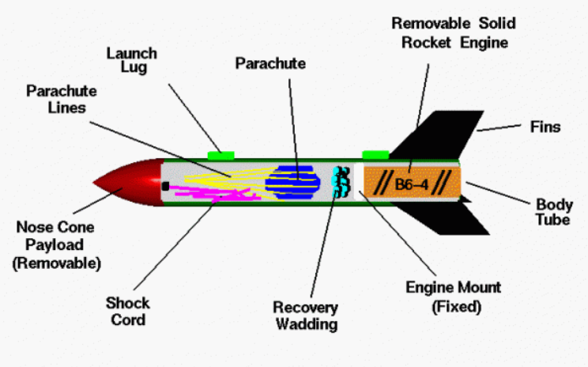
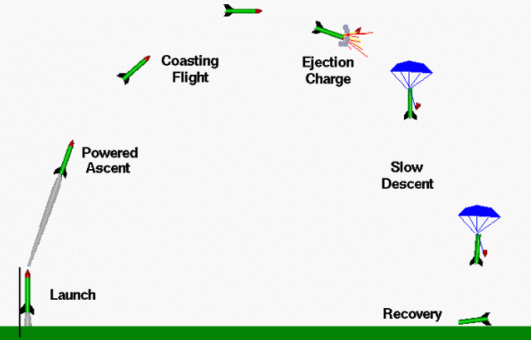
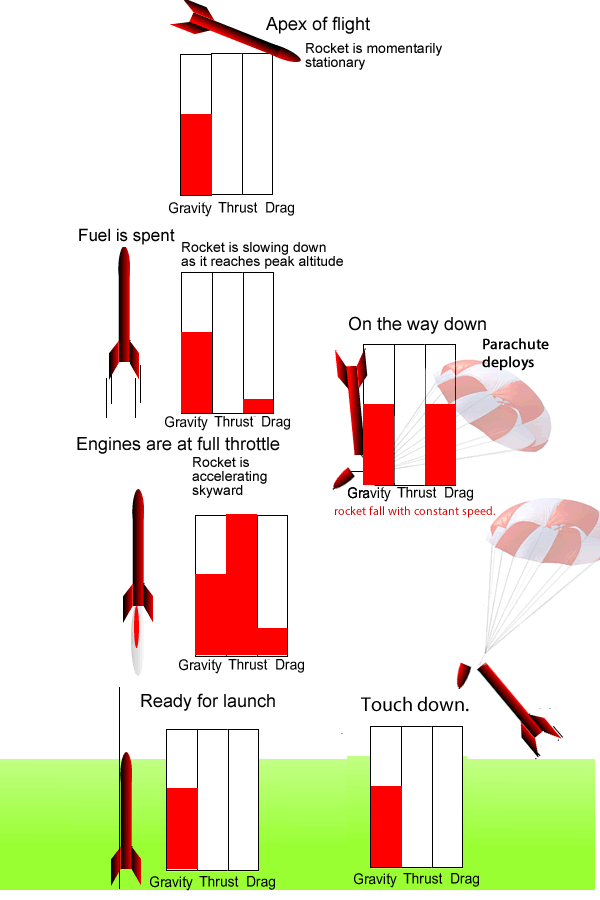
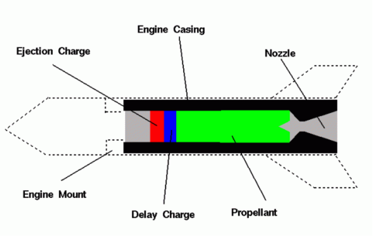
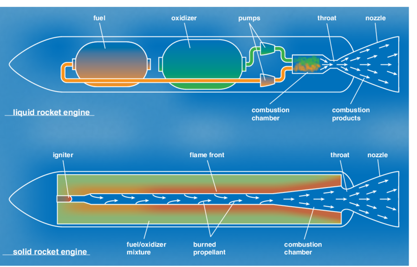
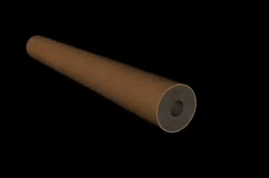
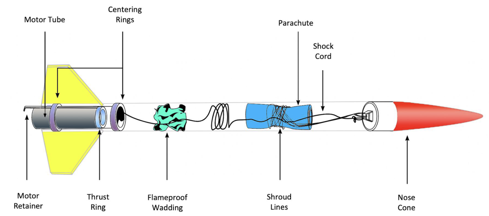
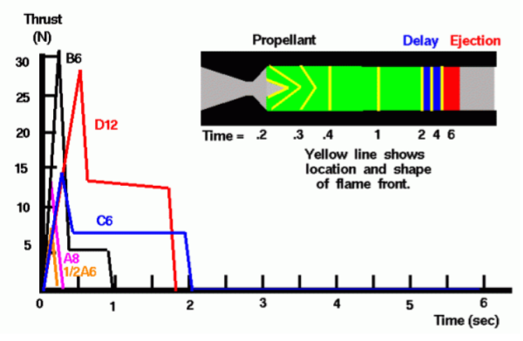

Experience the excitement of model rocketry, where science meets adventure! Learn how small-scale rockets mimic real space missions, using aerodynamics, propulsion, and physics to soar into the sky.
Flying model rockets is a relatively safe and inexpensive way for students to learn the basics of forces and the response of a vehicle to external forces. Like an airplane, a model rocket is subjected to the forces of weight, thrust, and aerodynamics during its flight.
Parts of a Single Stage Model Rocket
Model rockets are small-scale rockets designed for educational and recreational launches. They use pre-packaged solid fuel engines, are reusable, and include a recovery system for safe landings.
Body Tube - The main structure, usually made of cardboard.
Fins - Provide stability during flight, made of plastic or balsa wood.
Engine Mount - Holds the solid-fuel engine and transmits thrust to the rocket.
Solid-Fuel Engine - Single-use engine providing thrust; available in different sizes.
Ejection Charge - Pressurizes the body tube to deploy the recovery system.
Recovery Wadding - Protects the parachute from hot gases.
Recovery System - Parachute or streamer ensures a safe landing.
Nose Cone - Reduces air resistance and houses the shock cord.
Shock Cord - Keeps rocket parts connected after deployment.
Launch Lugs - Small tubes guiding the rocket on the launch rail.
Building & Launching
The body tube is assembled with fins and an engine mount.
A solid-fuel engine is inserted before launch.
Recovery wadding and a parachute are packed for a safe descent.
The rocket is launched using a launch rail, ensuring a stable ascent.

Fig: Demo Launch of a Model Rocket
Flight of a Model Rocket
Phenomenon in the Flight
Launch & Powered Ascent - The thrust exceeds weight, propelling the rocket upwards with aerodynamic lift and drag acting on it.
Coasting Phase - The engine burns out, and the rocket slows down due to drag and gravity, reaching its maximum altitude.
Delay Charge & Ejection - A slow-burning charge helps track the rocket, before the ejection charge deploys the parachute.
Parachute Descent & Recovery - The rocket gently descends under drag, allowing safe recovery and reuse with a new engine.
Flight Path
On the graphic, we show the flight path as a large arc through the sky. Ideally, the flight path would be straight up and down; this provides the highest maximum altitude. But model rockets often turn into the wind during powered flight because of an effect called weather cocking. The effect is the result of aerodynamic forces on the rocket and cause the maximum altitude to be slightly less than the optimum.


Fig: Forces on the rocket at different phases of flight
Model Rocket Engine
Model rockets use solid-fuel engines designed for safe, controlled launches. These engines generate thrust by burning a pre-packaged solid propellant, propelling the rocket upward. Unlike liquid engines, model rocket motors burn completely once ignited and must be replaced after each flight. They come in various sizes to control altitude and flight duration, making them ideal for educational and recreational rocketry.
Types of Rocket Engines
1. Liquid Rockets
Fuel and oxidizer are stored separately and pumped into the combustion chamber.
Burning occurs in the nozzle, generating thrust.
Thrust can be controlled by adjusting the fuel/oxidizer flow.
More complex and heavier due to pumps and storage tanks.
2. Solid Rockets
Fuel and oxidizer are pre-mixed into a solid propellant.
Burn starts with an igniter and continues until fully exhausted.
Thrust cannot be stopped once ignition begins.
Simpler, easier to store, and can be kept ready for years.

Fig: Parts of an engine

Fig: Types of Engines - Liquid Rocket Engine and Solid Rocket Engine
Working of Solid Engine
Ignition - An igniter heats the propellant, starting combustion. Burning Process - A flame front moves through the solid fuel, creating hot exhaust gases for thrust. Thrust Generation - The rocket is propelled as gases escape through the nozzle. Stopping Mechanism - Unlike liquid rockets, solid rockets cannot be turned off; the only way to stop them is by destroying the casing.

Parts of a Solid Rocket Engine
Engine Casing - A heavy cardboard cylinder that houses the nozzle, propellant, and charges. Nozzle - Made of clay or ceramics, it accelerates hot gases to produce thrust. Solid Propellant - The main fuel that burns to generate thrust during powered flight. Electric Igniter - Triggers combustion, starting the thrust phase. Electric Igniter - Triggers combustion, starting the thrust phase. Delay Charge - A blue-colored charge that burns after thrust ends, allowing the rocket to coast to peak altitude. Ejection Charge - A red-colored charge that ignites after the delay, creating a small explosion to eject the nose cone and deploy the parachute for safe recovery.

Model Rocket Engine Performance
Model rocket performance (how far, how high, how fast) depends a great deal on the rocket engine performance. There are several different ways to characterize rocket engine performance. Model rocket engines come in a variety of sizes and weights, with different amounts of propellant, with different burn patterns, which effects the thrust profile and with different values of the delay charge, which sets the amount of time for the coasting phase of the flight. On this page, we discuss the factors that affect model rocket engine performance.

Performance Curves (Describing the Animation)
In the animation, we show the shape and location of the flame front for a C6-4 engine. Engine designations are explained on another page. The schematic is two dimensional while the real engine is three dimensional. So, a three-dimensional cone surface appears as a two-dimensional angle on the schematic. The flame front is shown as a red line that moves through the propellant as the engine burns. The hot exhaust is shown in yellow. The time is noted on the plot by a moving red line.
At ignition (t = 0), a small cone forms in the propellant near the nozzle. As it burns, the cone expands, causing a rapid thrust increase until t = 0.2. From t = 0.2 to 0.5, the cone flattens, reducing thrust. By t = 0.5, a flat flame front forms, keeping thrust constant until t = 2, when the propellant burns out and thrust drops to zero. The delay charge then ignites.
Even though the amount of the delay charge is smaller than the propellant, it burns longer because it is made of a different material. For this engine we show a 4 second delay. At time = 6 the ejection charge is reached and ignited and blows out the front of the engine.